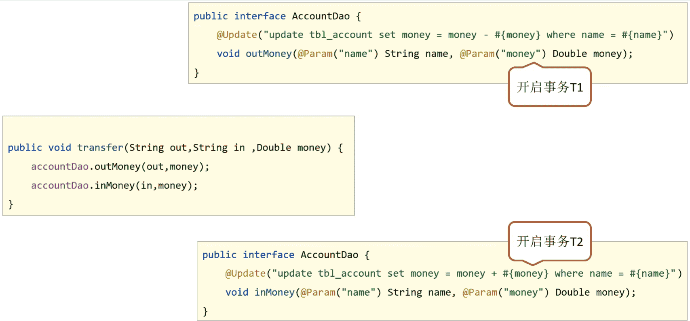
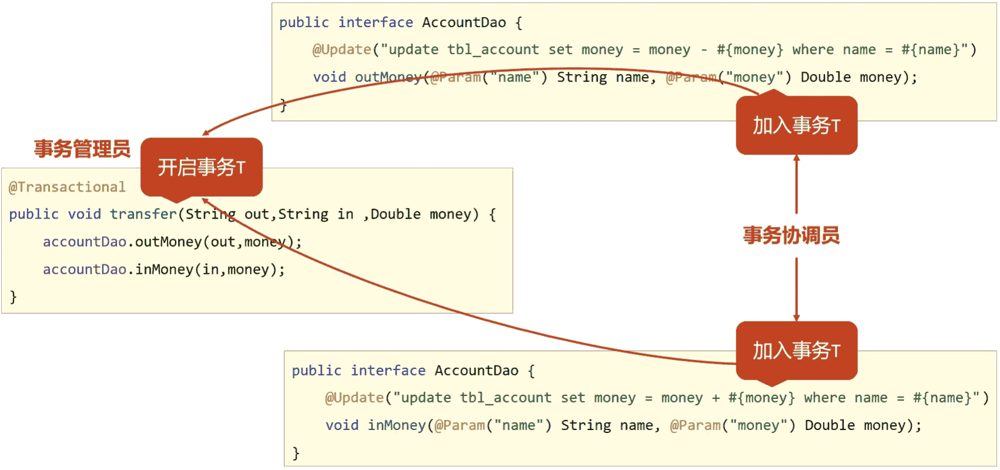
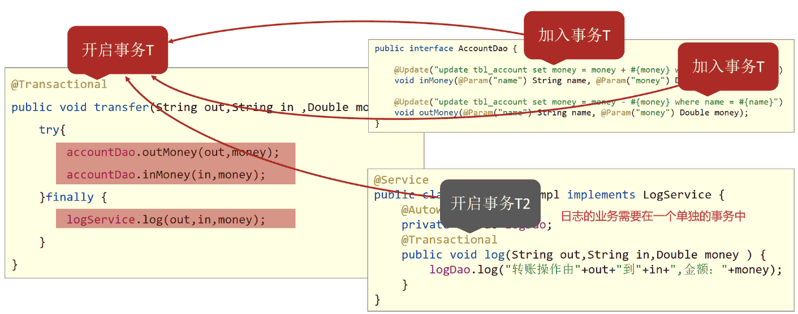
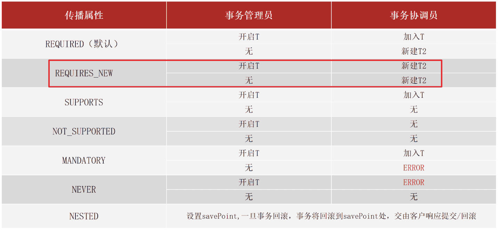

AOP事务管理
1. AOP事务管理
1.1 Spring事务简介
1.1.1 相关概念介绍
- 事务作用：在数据层保障一系列的数据库操作同成功同失败
- Spring事务作用：在数据层或**业务层**保障一系列的数据库操作同成功同失败
数据层有事务可以理解，为什么业务层也需要处理事务呢?
举个简单的例子，
- 转账业务会有两次数据层的调用，一次是加钱一次是减钱
- 把事务放在数据层，加钱和减钱就有两个不同的事务
- 没办法保证加钱和减钱同时成功或者同时失败
- 这个时候就需要将事务放在业务层进行处理。
Spring为了管理事务，提供了一个平台事务管理器PlatformTransactionManager
1 | public interface PlatformTransactionManager extends TransactionManager { |
commit是用来提交事务，rollback是用来回滚事务。
PlatformTransactionManager只是一个接口，Spring还为其提供了一个具体的实现:
1 | public class DataSourceTransactionManager { |
从名称上可以看出，只需要给它一个DataSource对象，它就可以帮你去在业务层管理事务。其内部采用的是JDBC的事务。所以说如果你持久层采用的是JDBC相关的技术，就可以采用这个事务管理器来管理你的事务。而Mybatis内部采用的就是JDBC的事务，所以后期Spring整合Mybatis就采用的这个DataSourceTransactionManager事务管理器。
1.1.2 转账案例-需求分析
接下来通过一个案例来学习下Spring是如何来管理事务的。
先来分析下需求:
需求: 实现任意两个账户间转账操作
需求微缩: A账户减钱，B账户加钱
为了实现上述的业务需求，可以按照下面步骤来实现下:
①：数据层提供基础操作，指定账户减钱（outMoney），指定账户加钱（inMoney）
②：业务层提供转账操作（transfer），调用减钱与加钱的操作
③：提供2个账号和操作金额执行转账操作
④：基于Spring整合MyBatis环境搭建上述操作
1.1.3 转账案例-环境搭建
步骤1:准备数据库表
之前在整合Mybatis的时候已经创建了这个表,可以直接使用
1 | create database spring_db character set utf8; |
步骤2:创建项目导入jar包
项目的pom.xml添加相关依赖
1 | <dependencies> |
步骤3:根据表创建模型类
1 | public class Account implements Serializable { |
步骤4:创建Dao接口
1 | public interface AccountDao { |
步骤5:创建Service接口和实现类
1 | public interface AccountService { |
步骤6:添加jdbc.properties文件
1 | jdbc.driver=com.mysql.jdbc.Driver |
步骤7:创建JdbcConfig配置类
1 | public class JdbcConfig { |
步骤8:创建MybatisConfig配置类
1 | public class MybatisConfig { |
步骤9:创建SpringConfig配置类
1 |
|
步骤10:编写测试类
1 |
|
1.1.4 事务管理
上述环境，运行单元测试类，会执行转账操作，Tom的账户会减少100，Jerry的账户会加100。
这是正常情况下的运行结果，但是如果在转账的过程中出现了异常，如:
1 |
|
这个时候就模拟了转账过程中出现异常的情况，正确的操作应该是转账出问题了，Tom应该还是900，Jerry应该还是1100，但是真正运行后会发现，并没有像想象的那样，Tom账户为800而Jerry还是1100,100块钱凭空消息了，银行乐疯了。如果把转账换个顺序，银行就该哭了。
不管哪种情况，都是不允许出现的，对刚才的结果做一个分析:
①：程序正常执行时，账户金额A减B加，没有问题
②：程序出现异常后，转账失败，但是异常之前操作成功，异常之后操作失败，整体业务失败
当程序出问题后，需要让事务进行回滚，而且这个事务应该是加在业务层上，而Spring的事务管理就是用来解决这类问题的。
Spring事务管理具体的实现步骤为:
步骤1:在需要被事务管理的方法上添加注解
1 | public interface AccountService { |
注意:
@Transactional可以写在接口类上、接口方法上、实现类上和实现类方法上
- 写在接口类上，该接口的所有实现类的所有方法都会有事务
- 写在接口方法上，该接口的所有实现类的该方法都会有事务
- 写在实现类上，该类中的所有方法都会有事务
- 写在实现类方法上，该方法上有事务
- 建议写在实现类或实现类的方法上
步骤2:在JdbcConfig类中配置事务管理器
1 | public class JdbcConfig { |
**注意：**事务管理器要根据使用技术进行选择，Mybatis框架使用的是JDBC事务，可以直接使用DataSourceTransactionManager
步骤3：开启事务注解
在SpringConfig的配置类中开启
1 |
步骤4:运行测试类
会发现在转换的业务出现错误后，事务就可以控制回顾，保证数据的正确性。
知识点1：@EnableTransactionManagement
| 名称 | @EnableTransactionManagement |
|---|---|
| 类型 | 配置类注解 |
| 位置 | 配置类定义上方 |
| 作用 | 设置当前Spring环境中开启注解式事务支持 |
知识点2：@Transactional
| 名称 | @Transactional |
|---|---|
| 类型 | 接口注解 类注解 方法注解 |
| 位置 | 业务层接口上方 业务层实现类上方 业务方法上方 |
| 作用 | 为当前业务层方法添加事务（如果设置在类或接口上方则类或接口中所有方法均添加事务） |
1.2 Spring事务角色
这节中重点要理解两个概念，分别是事务管理员和事务协调员。
- 未开启Spring事务之前:

- AccountDao的outMoney因为是修改操作，会开启一个事务T1
- AccountDao的inMoney因为是修改操作，会开启一个事务T2
- AccountService的transfer没有事务，
- 运行过程中如果没有抛出异常，则T1和T2都正常提交，数据正确
- 如果在两个方法中间抛出异常，T1因为执行成功提交事务，T2因为抛异常不会被执行
- 就会导致数据出现错误
- 开启Spring的事务管理后

- transfer上添加了@Transactional注解，在该方法上就会有一个事务T
- AccountDao的outMoney方法的事务T1加入到transfer的事务T中
- AccountDao的inMoney方法的事务T2加入到transfer的事务T中
- 这样就保证他们在同一个事务中，当业务层中出现异常，整个事务就会回滚，保证数据的准确性。
通过上面例子的分析，就可以得到如下概念:
- 事务管理员：发起事务方，在Spring中通常指代业务层开启事务的方法
- 事务协调员：加入事务方，在Spring中通常指代数据层方法，也可以是业务层方法
注意:
目前的事务管理是基于DataSourceTransactionManager和SqlSessionFactoryBean使用的是同一个数据源。
1.3 Spring事务属性
上一节介绍了两个概念，事务的管理员和事务的协同员，对于这两个概念具体做什么的，待会通过案例来使用下。除了这两个概念，还有就是事务的其他相关配置都有哪些，就是接下来要学习的内容。
在这一节中，主要学习三部分内容事务配置、转账业务追加日志、事务传播行为。
1.3.1 事务配置
| 属性 | 作用 | 示例 |
|---|---|---|
readOnly |
设置是否为只读事务 | readOnly=true |
timeout |
设置事务超时时间 | timeout=-1（永不超时） |
rollbackFor |
设置事务回滚异常（class） | rollbackFor={NullPointerException.class} |
rollbackForClassName |
设置事务回滚异常（字符串） | 同上格式为字符串 |
noRollbackFor |
设置事务不回滚异常（class） | noRollbackFor={NullPointerException.class} |
noRollbackForClassName |
设置事务不回滚异常（字符串） | 同上格式为字符串 |
isolation |
设置事务隔离级别 | isolation=Isolation.DEFAULT |
propagation |
设置事务传播行为 | propagation=... |
上面这些属性都可以在@Transactional注解的参数上进行设置。
-
readOnly：true只读事务，false读写事务，增删改要设为false,查询设为true。
-
timeout:设置超时时间单位秒，在多长时间之内事务没有提交成功就自动回滚，-1表示不设置超时时间。
-
rollbackFor:当出现指定异常进行事务回滚
-
noRollbackFor:当出现指定异常不进行事务回滚
-
思考:出现异常事务会自动回滚，这个是之前就已经知道的
-
noRollbackFor是设定对于指定的异常不回滚，这个好理解
-
rollbackFor是指定回滚异常，对于异常事务不应该都回滚么，为什么还要指定?
-
这块需要更正一个知识点，并不是所有的异常都会回滚事务，比如下面的代码就不会回滚
1
2
3
4
5
6
7
8
9
10
11
12
13
14
15
16
17
18
19
20
21
22
23
24
25
26
27public interface AccountService {
/**
* 转账操作
* @param out 传出方
* @param in 转入方
* @param money 金额
*/
//配置当前接口方法具有事务
public void transfer(String out,String in ,Double money) throws IOException;
}
public class AccountServiceImpl implements AccountService {
private AccountDao accountDao;
public void transfer(String out,String in ,Double money) throws IOException{
accountDao.outMoney(out,money);
//int i = 1/0; //这个异常事务会回滚
if(true){
throw new IOException(); //这个异常事务就不会回滚
}
accountDao.inMoney(in,money);
}
}
-
-
-
出现这个问题的原因是，Spring的事务只会对
Error异常和RuntimeException异常及其子类进行事务回顾，其他的异常类型是不会回滚的，对应IOException不符合上述条件所以不回滚-
此时就可以使用rollbackFor属性来设置出现IOException异常不回滚
1
2
3
4
5
6
7
8
9
10
11
12
13
14
15
16
public class AccountServiceImpl implements AccountService {
private AccountDao accountDao;
public void transfer(String out,String in ,Double money) throws IOException{
accountDao.outMoney(out,money);
//int i = 1/0; //这个异常事务会回滚
if(true){
throw new IOException(); //这个异常事务就不会回滚
}
accountDao.inMoney(in,money);
}
}
-
-
rollbackForClassName等同于rollbackFor,只不过属性为异常的类全名字符串
-
noRollbackForClassName等同于noRollbackFor，只不过属性为异常的类全名字符串
-
isolation设置事务的隔离级别
- DEFAULT :默认隔离级别, 会采用数据库的隔离级别
- READ_UNCOMMITTED : 读未提交
- READ_COMMITTED : 读已提交
- REPEATABLE_READ : 重复读取
- SERIALIZABLE: 串行化
介绍完上述属性后，还有最后一个事务的传播行为，为了讲解该属性的设置，需要完成下面的案例。
1.3.2 转账业务追加日志案例
1.3.2.1 需求分析
在前面的转案例的基础上添加新的需求，完成转账后记录日志。
- 需求：实现任意两个账户间转账操作，并对每次转账操作在数据库进行留痕
- 需求微缩：A账户减钱，B账户加钱，数据库记录日志
基于上述的业务需求，来分析下该如何实现:
①：基于转账操作案例添加日志模块，实现数据库中记录日志
②：业务层转账操作（transfer），调用减钱、加钱与记录日志功能
需要注意一点就是，这个案例的预期效果为:
无论转账操作是否成功，均进行转账操作的日志留痕
1.3.2.2 环境准备
该环境是基于转账环境来完成的，所以环境的准备可以参考1.1.3的环境搭建步骤，在其基础上，继续往下写
步骤1:创建日志表
1 | create table tbl_log( |
步骤2:添加LogDao接口
1 | public interface LogDao { |
步骤3:添加LogService接口与实现类
1 | public interface LogService { |
步骤4:在转账的业务中添加记录日志
1 | public interface AccountService { |
步骤5:运行程序
-
当程序正常运行，tbl_account表中转账成功，tbl_log表中日志记录成功
-
当转账业务之间出现异常(int i =1/0),转账失败，tbl_account成功回滚，但是tbl_log表未添加数据
-
这个结果和想要的不一样，什么原因?该如何解决?
-
失败原因:日志的记录与转账操作隶属同一个事务，同成功同失败
-
最终效果:无论转账操作是否成功，日志必须保留
1.3.3 事务传播行为

对于上述案例的分析:
- log方法、inMoney方法和outMoney方法都属于增删改，分别有事务T1,T2,T3
- transfer因为加了@Transactional注解，也开启了事务T
- 前面讲过Spring事务会把T1,T2,T3都加入到事务T中
- 所以当转账失败后，所有的事务都回滚，导致日志没有记录下来
- 这和的需求不符，这个时候就想能不能让log方法单独是一个事务呢?
要想解决这个问题，就需要用到事务传播行为，所谓的事务传播行为指的是:
事务传播行为：事务协调员对事务管理员所携带事务的处理态度。
具体如何解决，就需要用到之前没有说的propagation属性。
事务传播行为（Transaction Propagation）是指定义在一个事务方法调用另一个事务方法时，事务如何在这两个方法之间传播和交互的行为。
在事务处理中，可以通过设置propagation属性来控制事务传播行为。该属性决定了当前事务是否应该加入已经存在的事务，或者是否应该创建一个新的事务。事务传播行为可以根据具体需求进行配置，以实现对事务的灵活管理。
常见的事务传播行为包括：
REQUIRED：如果当前存在事务，则加入该事务；如果当前没有事务，则创建一个新的事务。REQUIRES_NEW：创建一个新的事务，并挂起当前的事务（如果存在）。SUPPORTS：如果当前存在事务，则加入该事务；如果当前没有事务，则以非事务方式执行。NOT_SUPPORTED：以非事务方式执行操作，如果当前存在事务，则挂起该事务。NEVER：以非事务方式执行操作，如果当前存在事务，则抛出异常。
1.修改logService改变事务的传播行为
1 |
|
运行后，就能实现想要的结果，不管转账是否成功，都会记录日志。
2.事务传播行为的可选值

对于开发实际中使用的话，因为默认值需要事务是常态的。根据开发过程选择其他的就可以了，例如案例中需要新事务就需要手工配置。其实入账和出账操作上也有事务，采用的就是默认值。